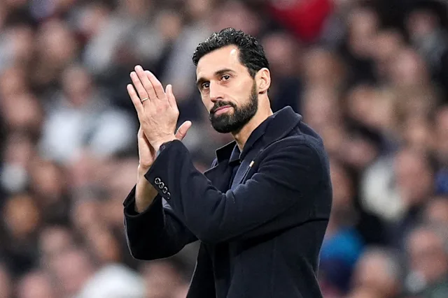

Napsal: Filip Marek
Datum: 18.4.2026
Éra Álvara Arbeloy na lavičce „Bílého baletu“ bude mít zřejmě jen krátké trvání. Podle informací španělského webu MARCA se vedení Realu Madrid rozhodlo neprodloužit s Arbeloem smlouvu a po skončení aktuální sezóny se s ním rozloučí. Hlavním důvodem mají být neuspokojivé výsledky v závěru sezóny. Po vypadnutí Realu Madrid ve čtvrtfinále Ligy mistrů s Bayernem Mnichov a se ztrátou devíti bodů na Barcelonu v Lalize už je letos dosah na jakoukoli trofej pro tento celek silně nepravděpodobný. Klub zatím oficiální prohlášení nevydal, nicméně spekuluje se již o jeho nástupcích. Hlavní kandidát na uvolněný post je bývalý trenér Liverpoolu Jürgen Klopp. Ten sice Před necelým rokem tým odmítl, ale spekulace naznačují, že změnil názor.
